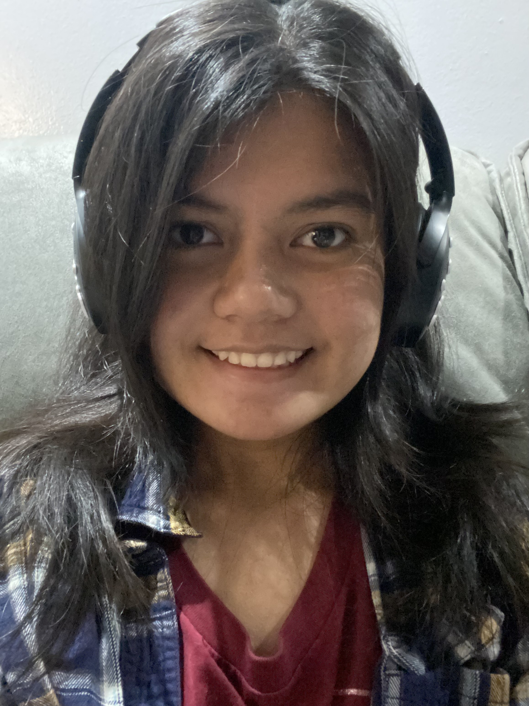

Hello! My name is Hana Ayesha Tan, and welcome to my webpage. I tend to go by my second name, Ayesha, and my pronouns are she/her. I have an immense interest in both character design and the world of comics, which is something that I eventually plan on pursuing as a full-time (maybe) professional career. I have a special interest in certain media such as fantasy (Lord of the Rings, A Song of Ice and Fire), dystopian (even post-apocalyptic)-themed media, whether it be animations or video games (revolving majorly around Final Fantasy 7, also Land of the Lustrous), and I also love doing deep analysis on these kinds of media. Another series that I love to do a deep analysis on (for the most part) is the world of Jujutsu Kaisen.
As an artist, I draw numerous inspirations from the authors and artists that I've mentioned. Jujutsu Kaisen's Gege Akutami (mangaka) and J.R.R Tolkein (author of The Lord of the Rings) primarily helped me shape my art style, character design, and my beliefs within certain characters with the help of the worldbuilding that they put into their own works. I also like the style of surrealism, and a bit of dreamcore/weirdcore mixed in there as well; most of my character designs (in the past) consist of those ideas you see in those kinds of aesthetics. At the moment, my aspirations are to master anatomy and hopefully (just like in the beginning that I've mentioned), pursue comics and character design for a living.